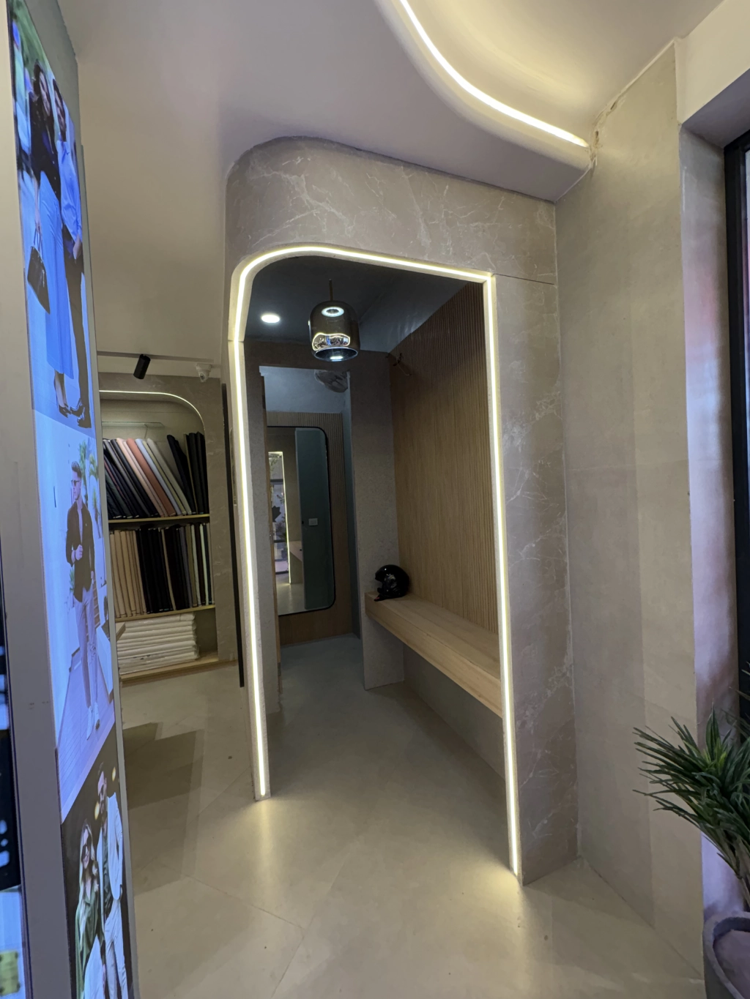

Do You Really Need an Architect? Can't a Contractor Just Do It?
क्या आपको वास्तव में एक आर्किटेक्ट की आवश्यकता है? क्या एक ठेकेदार यह नहीं कर सकता?

A human, honest, no-fluff viewpoint. Let's get genuine. If you're building a house, a business, a café, or even renovating a room, you've most likely heard: "Why should I hire an architect? The contractor will handle everything." It's a valid question.
Because from the outside, a building site appears to be made of bricks, cement, labor, and money. So, where does the architect fit in? Are they even essential, or are they simply an additional line on the budget? Let's talk about it—not in technical words, but in the manner that actual people perceive building.
1. Contractors Build. Architects Imagine.
A contractor's job is execution. They are doers. They follow instructions, manage labor, and ensure the building goes up. But who gives those instructions?
Imagine asking a contractor to "just build a house." He will look at you the way a chef looks when someone says "just make food." Sure, food will come.
- But is it nutritious? Balanced? Aesthetic?
- Does it match your taste?
- Or did we just dump ingredients into a pan?
It is the same with construction. Contractors build. Architects create.
2. Architects Translate Your Lifestyle Into Walls
You are not just building four rooms and a kitchen. You are building:
- Where your mother will pray every morning
- Where your child will take their first steps
- Where you will have chai in the evening breeze
- Where you will hide when life gets stressful
- Where festivals, birthdays, fights, regrets, and memories will live
A contractor builds the walls. An architect shapes the life inside those walls.
3. But "My Contractor Has Experience"
Absolutely. Most contractors have worked on dozens—even hundreds—of sites. They are brilliant at execution. But experience alone is not design.
A contractor knows how to build. An architect knows why and what to build.
Think of it like this:
- A tailor can stitch clothes
- A fashion designer creates a wardrobe that fits your personality
Both are important. But one needs the other.
4. Architects Save You Money (Yes, Really)
Construction is expensive. Everyone wants to save. But here is the truth nobody tells you: Most cost overruns happen because of bad planning—not bad contractors.
Architects help you avoid:
- Redoing walls
- Poor electrical planning
- Wasted materials
- Unnecessary beams
- Oversized rooms
- Ugly elevations
- Heat & lighting issues
- Long-term maintenance nightmares
A good architect can save you far more than their fee. Think of them as your "financial bodyguard" inside the design process.
5. Contractors Fix Problems. Architects Prevent Them.
A contractor sees problems when they happen. An architect sees problems before they happen. And trust me—preventing costs 100x less than fixing.
- You want thoughtful door placements, not a door that opens into a cupboard
- You want natural light, not a room that feels like a cave
- You want ventilation, not a home that needs AC even in winter
- You want proportions, not a bathroom that feels like a stadium
These things do not show up on Day 1. But you feel them every day after shifting in.
6. "But My Neighbor Built Without an Architect"
Yes—people also drive without seatbelts and survive. That does not make it a smart choice.
Sure, you can build without an architect. But you may end up with:
- Weird room shapes
- Wasted areas
- Leaking roofs
- Zero natural light
- Ugly elevation
- Unbalanced proportions
- Structural mistakes
- A house that looks "just okay" instead of "wow"
Buildings last 40–80 years. Regret lasts longer.
7. Architects Don't Design for Today. They Design for Life.
Your needs change. Your family changes. Your budget changes. Your lifestyle changes.
A contractor sees the next 3 months of construction. An architect sees the next 20 years of your life. And that vision makes all the difference.
So… Do You Really Need an Architect?
If you want just walls, a contractor is enough.
If you want a home, an architect is essential.
If you want just a shop, a contractor will build it.
If you want a brand experience, you need an architect.
Because architects do not just design buildings. They design feelings. They design journeys. They design the way you live, work, breathe, rest, celebrate, and grow.
Buildings are not made of bricks. They are made of moments. And an architect ensures every moment feels right.
Ready to Work with an Architect?
एक आर्किटेक्ट के साथ काम करने के लिए तैयार हैं?
Let's discuss how we can bring your vision to life with thoughtful design and expert planning.
Schedule a Consultation